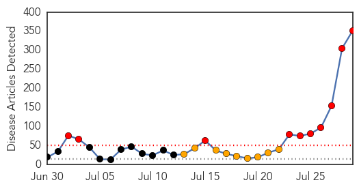
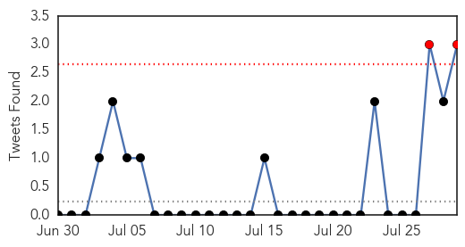
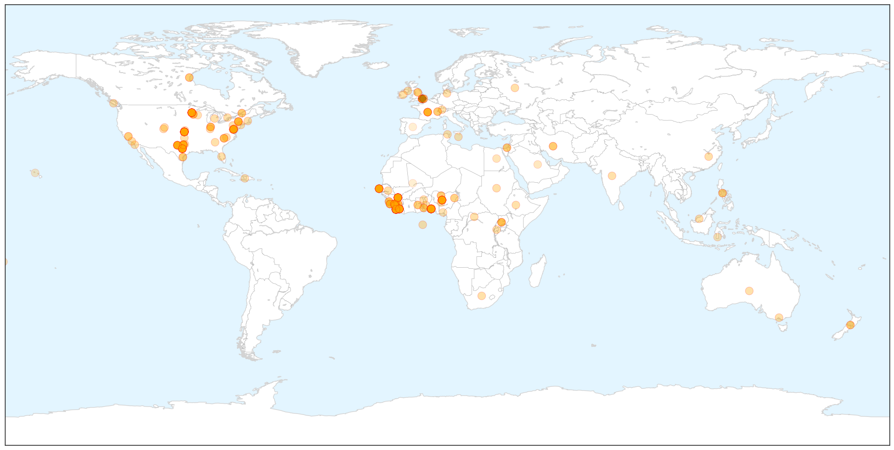

Hepatitis
30-Day Web Trend
7 alerts, 0 warnings

30-Day Twitter Trend
0 alerts, 0 warnings

Article Locations


Article Confidences
Top Articles:
- 0.957
- SGGP English Edition- Around 4 million Vietnamese people suffer hepatitis C
- 0.823
- The Kathmandu Post
- 0.771
- Hepatitis E found in donor blood
- 0.770
- Starting the conversation about hepatitis C in downtown Sydney
- 0.713
- Awareness walk marks World Hepatitis Day
- 0.679
- Travelers Leaving Country Should Plan Ahead For Immunizations
- 0.653
- Viral hepatitis is a silent killer
- 0.547
- Map of hepatitis C strains should help eradication efforts
Top Tweets:
-
No tweets found for Jul 29, 2014
Ebola
30-Day Web Trend
10 alerts, 9 warnings

30-Day Twitter Trend
2 alerts, 0 warnings

Article Locations

X

Article Confidences
Top Articles:
- 1.000
- Deadly Ebola virus outbreak sparks travel warning
- 1.000
- Ebola plane travel scare has officials on edge
- 1.000
- Ebola fears hit close to home
- 1.000
- Ebola: what you need to know
- 1.000
- Officials Seek Contacts of Ebola Victim Who Died in Nigeria
- 1.000
- New Fears Rise Over Spread of Ebola
- 1.000
- Top Ebola doctor, Sheikh Umar Khan, died of Ebola in Sierra Leone
- 1.000
- New fears about Ebola spread after plane scare in Africa
- 1.000
- Sick man with Ebola who boarded plane shows weaknesses in stopping deadly disease’s spread
- 1.000
- Ebola: 5 Things You Should Know
- 1.000
- The return of Ebola and the spread of fear
- 1.000
- New fears about Ebola spread after plane scare
- 1.000
- Top Ebola doctor dies from virus
- 1.000
- Ebola only a plane ride away from USA
- 1.000
- New Fears about Ebola Spread after Plane Scare
- 1.000
- Two Americans, Freetown resident latest Ebola victims
- 1.000
- Why you should be worried about the worst Ebola outbreak in history
- 1.000
- Ebola Outbreak Spreads To Nigeria; Hospital Quarantined After Country’s First Case
- 1.000
- Ebola Plane Travel Scare Has Officials On Edge
- 1.000
- Minnesotans concerned about Ebola outbreak
- 1.000
- What To Know About The Deadly Disease
- 1.000
- Homeland Security News Wire
- 1.000
- Gov’t has no cash to fight ebola
- 1.000
- Is the deadly Ebola virus on the way to the UK?
- 1.000
- How deadly Ebola has spread across the globe: Health officials try to trace 30,000 linked to death of US victim - as Nigerian film star sparks outrage by fleeing Africa first-class in an Ebola mask
- 1.000
- Australian doctor Glenn Marsh tasked with trying to find cure for Ebola virus
- 1.000
- Ebola victim Patrick Sawyer who sparked global fears was American
- 1.000
- Ebola victim Patrick Sawyer who sparked global fears was American
- 1.000
- Ebola victim Patrick Sawyer who sparked global fears was American
- 1.000
- Sierra Leone's top Ebola doctor dies after contracting the virus
- 1.000
- Sierra Leone's top Ebola doctor dies after contracting the virus
- 1.000
- Ebola warning issued as hospitals could be 'ill-equipped' if virus spreads to UK
- 1.000
- Ebola warning issued as hospitals could be 'ill-equipped' if virus spreads to UK
- 1.000
- Is Ebola, the world's deadliest disease on its way to Britain?
- 1.000
- Ebola Outbreak can Threaten Global Safety
- 1.000
- Ebola plane travel scare has officials on edge
- 1.000
- Sheik Umar Khan, top Ebola doctor, dies from virus after treating dozens
- 1.000
- Sheik Umar Khan, top Ebola doctor, dies from virus after treating dozens
- 1.000
- New fears about Ebola spread after plane scare
- 1.000
- Why Ebola is so dangerous
- 1.000
- New Fears about Ebola spread after plane scare
- 1.000
- ABC-7.com WZVN News for Fort Myers, Cape Coral & Naples, Florida
- 1.000
- First U.S. citizen killed in African Ebola outbreak
- 1.000
- Doctor From Christian Ministry Gets Ebola Virus
- 1.000
- Nigeria admits precise number of people Ebola victim could have infected is not known as 59 people are placed under close surveillance
- 1.000
- UK doctors sound alarm over potential Ebola outbreak — RT UK
- 1.000
- Top Ebola doctor dies of virus in Sierra Leone — RT News
- 1.000
- 5 Things to Know About the Recent Ebola Outbreak
- 1.000
- Why Deadly Ebola Virus Is Likely to Hit the U.S. But Not Spread
- 1.000
- An overview of the new, and serious, Ebola outbreak in Africa
Showing top 50 articles...
Top Tweets:
- 0.760
- RT: The 39-yr-old hero of SierraLeone battle against Ebola Dr. Sheik Umar Khan has died of the disease. Heartbreaking. ht…
- 0.740
- RT: Death was all that hazmat-suited medical workers seemed to bring. So people fled making the outbreak worse. ebola ht…
- 0.562
- RT: .@CDCgov gives guidance on cleaning a plane if a symptomatic Ebola patient has been onboard. Soiled seat = biohazard h…